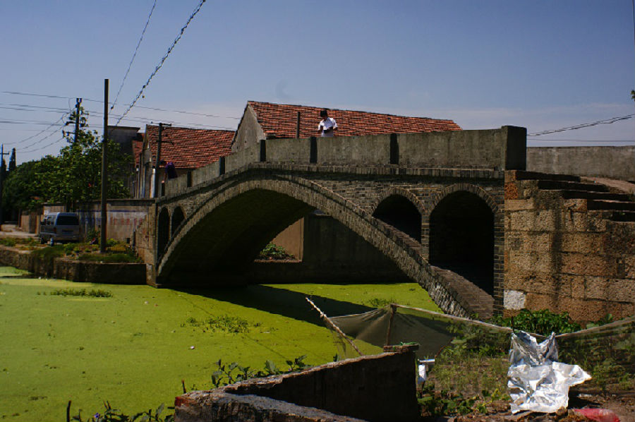

嘉兴市文物保护网 · 市级文物保护点 · 2020-11-09 · 原文

曹庄砖桥位于嘉兴市南湖区余新镇黎明村1组，南北跨曹庄市河，原为梁式石板桥，桥名为曹庄桥，现桥为20世纪70年代改建，为单拱五孔青砖桥，桥面加装水泥护栏。全长28.55米，桥面宽3.45米，矢高3.2米，南喇叭口宽3.8米，北喇叭口宽3.9米，北有13级台阶，南有12级台阶，台阶为原来的条石。桥身为青砖砌筑，无桥额、桥联及纹饰。该桥形制较大，跨度较长，所处位置曾经是连接市河两岸的主干道，虽于20世纪70年代大修过，但仍不失古朴，具有较高的历史和科学价值。2009年公布为嘉兴市文物保护点。